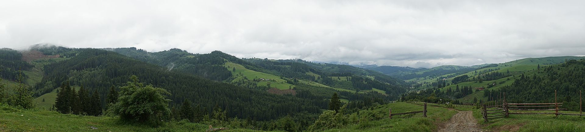
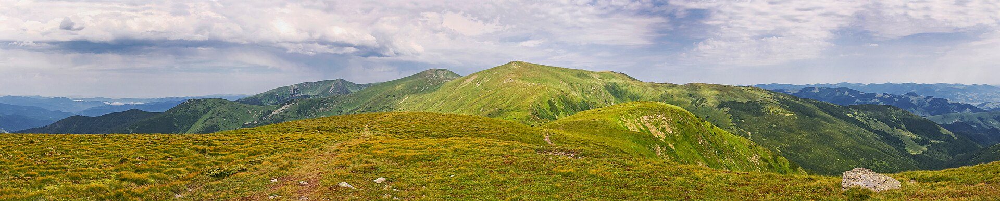
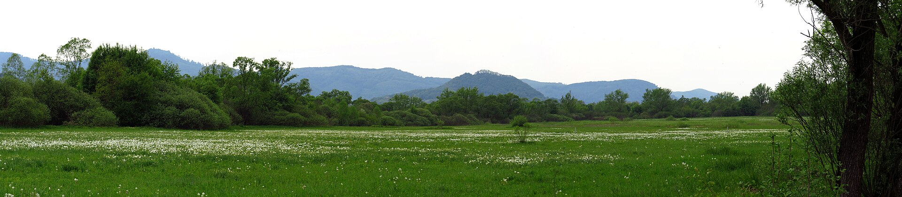

Заповідник було створено з метою збереження унікальних для Європи ділянок дикої природи, серед яких особливо цінні букові праліси. Завданням заповідника є охорона і відновлення флори та фауни що зникають, в тому числі ендеміків української частини Карпат.
Ідея про охорону природи цієї частини Карпат з'явилася ще на початку XX ст.. Згодом було створено кілька лісових резерватів — у районі Чорногори та Мармороського масиву. 1958 року на південних схилах масиву Красна створений Угольський лісовий заказник площею 4600 га. 1969 року в басейні річки Лужанки створено Широко-лужанський флористичний заказник площею 5644 га. В 1968 році на основі наявних природоохоронних територій організовано Карпатський біосферний заповідник, площа якого тоді становила 12600 га. У 1997 та 2010 роках були прийняті Укази Президента України про розширення території біосферного заповідника. Станом на 2019 рік площа заповідника становить 58 035,8 га. З 2 січня 2022 року, згідно Указу Президента України межі Карпатського біосферного заповідника були суттєво змінені. З 1992 року заповідник входить до міжнародної мережі біосферних резерватів ЮНЕСКО[6].
Територія заповідника охоплює такі природні комплекси: серед гірні груди, гірські букові, мішані та смерекові ліси, субальпійські й альпійські луки з сосново-вільховим криволіссям і скельно-лишайниковими ландшафтами. Майже 90 % території заповідника — це ліси (переважно праліси). Флора і фауна представлена понад тисячею видів вищих судинних рослин. Тут водиться: 67 видів ссавців, 193 види птахів, 10 видів плазунів, 15 видів земноводних, 29 видів риб, понад 3000 видів безхребетних[7]. У заповіднику відмічено 64 види рослин і 72 види тварин, занесених до Червоної книги МСОП і Червоної книги України, а також до Європейського Червоного списку[8].
Заповідні масиви та об'єкти
Відокремлені заповідні масиви
Природно-заповідний фонд України

Сторінка контактів Перейти на сайтСтатус: Природоохоронна науково-дослідна установа міжнародного значення. Підпорядковується Міністерству захисту довкілля та природних ресурсів України
Територія: Карпатський біосферний заповідник – один із найбільших природоохоронних об’єктів України. Займає площу 66417,4 га. Hайвища вершина України (гора Говерла, 2061 м), легендарні Близниці, високогірні озера, географічний Центр Європи, Долина нарцисів, всесвітньо відомі букові праліси, найбільша карстова печера Українських Карпат Дружба – лише частина його території. Тут представлене все ландшафтне і біологічне різноманіття Українських Карпат – від передгір'я до субальпійських та альпійських лук (180 - 2061 м над рівнем моря). Заповідник розташований в межах Рахівського, Тячівського, Хустського та Берегівського районів Закарпатської області і складається з 8 територіально ізольованих масивів: Свидовецького, Чорногірського, Кузій-Трибушанського, Мармароського, Угольсько-Широколужанського, Долини нарцисів, а також двох ботанічних заказників державного значення – "Чорна Гора" та "Юліївська Гора. Територія розділена на чотири функціональні зони: заповідну, буферну, антропогенних ландшафтів та регульованого заповідного режиму.
Коротка історія: 1968 р. – Постановою Уряду УРСР створено Карпатський державний заповідник на площі 12672 га 1993 р. – Рішенням Секретаріату програми МАБ установу включено до Всесвітньої мережі біосферних резерватів ЮНЕСКО 1993 р. – Указом Президента України на базі Карпатського природного заповідника утворено Карпатський біосферний заповідник 1990, 1997, 2002, 2007, 2010 рр. – Постановою Уряду України й Указами Президента України територію заповідника розширено до 58035,8 га 1997, 2002, 2007, 2012 рр. – Карпатський біосферний заповідник нагороджено Європейським дипломом Ради Європи для природоохоронних територій 2007 р. – букові праліси заповідника площею 20980,5 га включено до Списку Всесвітньої природної спадщини ЮНЕСКО 2017 р. – на прилеглих до заповідника землях утворено територію сталого розвитку (транзитну зону) площею 136,9 тис. га 2017 р. – окремі території включені до мережі Wilderness (дикої природи) 2019 р. – урочище Озірний-Бребенескул, масив Долина нарцисів та карстова печера Дружба отримали статус водно-болотних угідь міжнародного значення під егідою Рамсарської конвенції
Завдання: Охорона природних комплексів та збереження біорізноманіття Карпат Ведення моніторингу за станом природи Вивчення природних ресурсів Сприяння сталому розвитку регіону Екологічна освіта Розвиток екотуризму та рекреації
Природні та культурні цінності: Найбільші в Європі масиви букових пралісів, які входять до складу об’єкта Всесвітньої спадщини ЮНЕСКО "Букові праліси і давні ліси Карпат та інших регіонів Європи" Унікальні високогірні екосистеми з озерами льодовикового походження Найвищі гірські вершини Українських Карпат: Говерла, Бребенескул, Петрос, Близниці, Піп Іван Мармароський та інші Карстові печери Долина нарцисів Багате біорізноманіття – 320 видів хребетних та близько 5 тисяч видів безхребетних тварин, понад 5 тисяч видів рослин і грибів, з яких близько 500 видів є рідкісними та ендемічними Географічний центр Європи Стоянка первісної людини Гуцульська культура, зокрема традиційне полонинське господарство та пам’ятки дерев’яної архітектури
Для гостей: Музей екології гір та історії природокористування в Українських Карпатах (м. Рахів), Еколого-освітні центри "Музей нарцису" (м. Хуст) та "Центр Європи" (с. Ділове) Інформаційно-туристичні центри: "Високогір'я Карпат" (підніжжя г. Говерла), "Карпатська форель" (с. Костилівка), "Кевелів" (с. Кваси), "Букові праліси – об’єкт Всесвітньої спадщини ЮНЕСКО" (с. Мала Уголька) Мережа інформаційних пунктів 20 обладнаних екотуристичних маршрутів 4 екологічні стежки Стаціонарні місця короткострокової рекреації та місця відпочинку Мініготелі та кімнати для приїжджих Інформаційні друковані та відеоматеріали
Чорногірський хребет
Для перегляду згори можна перейти Наверх
Перейти на посилання Вікіпедії
Гарного Вам відпочинку!